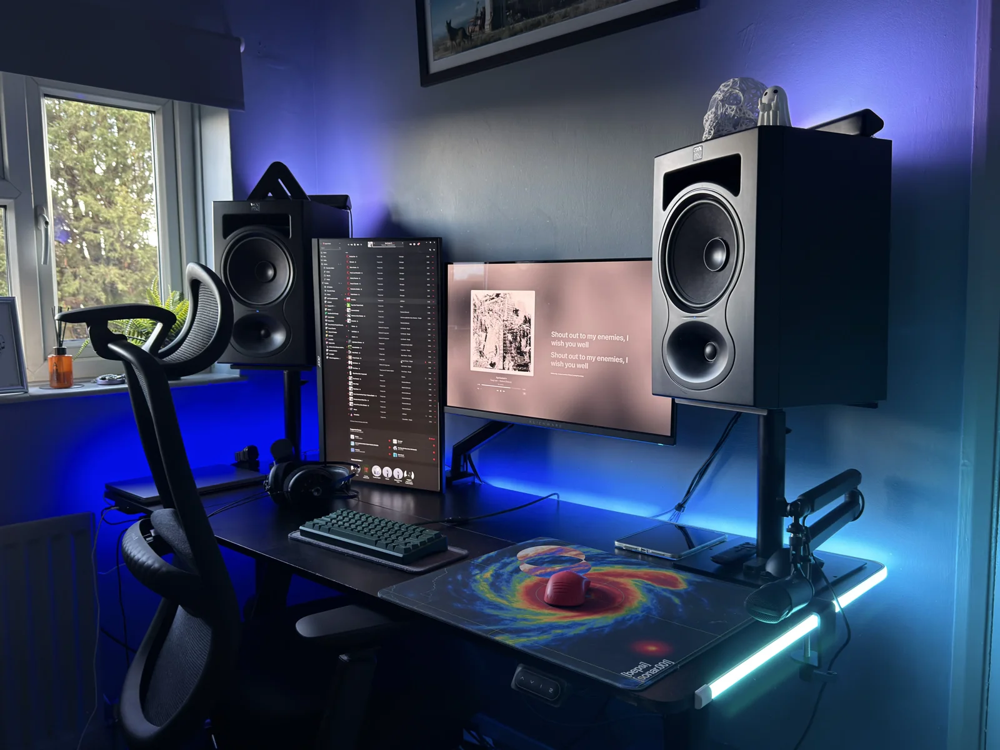

Custom keyboards
Mechanical keyboards, switches, layouts, and keyboard modifications.
Keyboard guidesAbout Bepsi
Based in London. Interested in PC hardware, peripherals, and audio.
About this site
I'm Bepsi, based in London. I use this site to keep useful hardware resources together and share the gear I use.
The main sections are the resource library, my setup, and hardware reviews. If a link is broken or you have something useful to add, let me know.

Interests
Mechanical keyboards, switches, layouts, and keyboard modifications.
Keyboard guidesHeadphones, in-ear monitors, speakers, and the equipment that drives them.
The audio setupMouse shapes, lightweight shells, and 3D printed modifications.
A mouse mod reviewThe resource library collects spreadsheets, guides, and tools from hardware communities. The setup page lists my PC, peripherals, and audio equipment, while the reviews cover hardware I have used. I update the setup and resource pages as the equipment and links change.
My earlier mouse project, AscentCustoms, is kept here for reference.